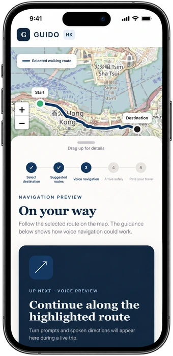
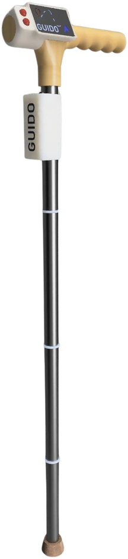
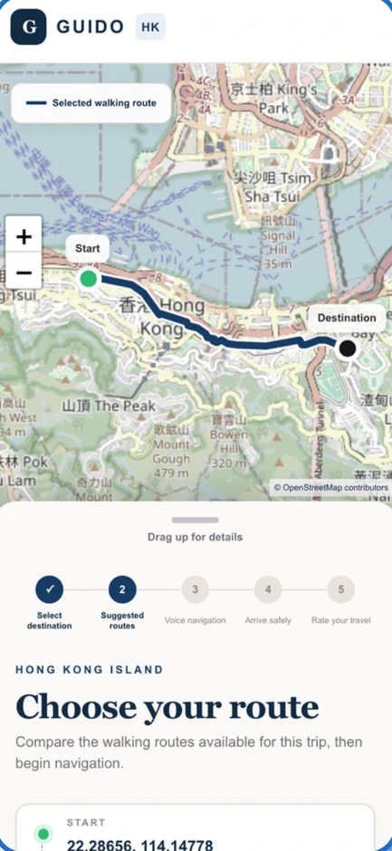
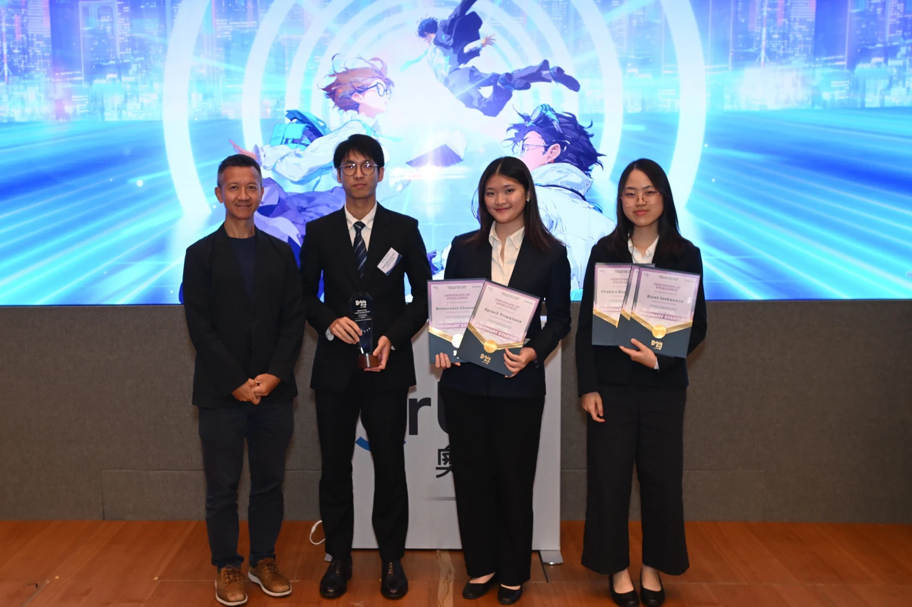
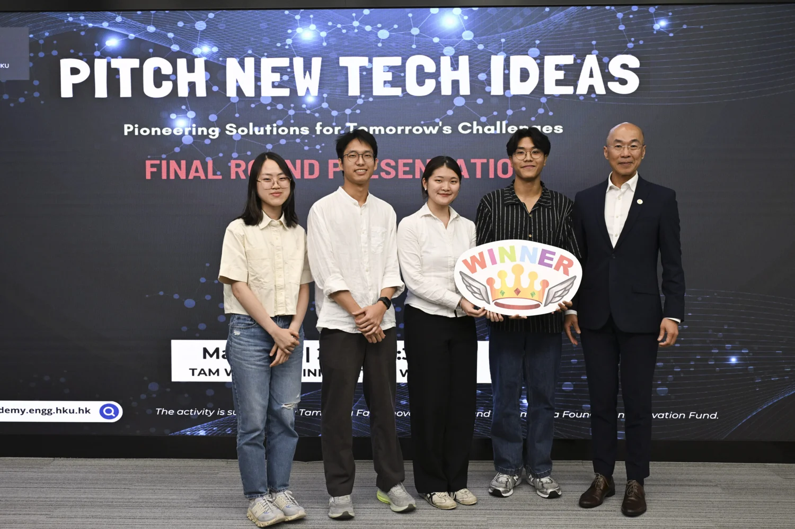
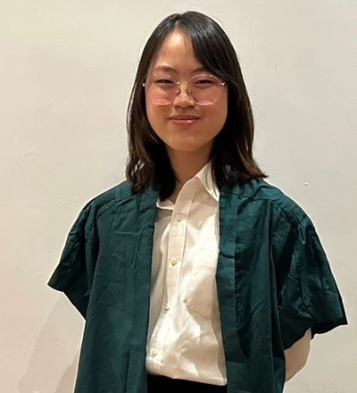

Choose a route you can manage
Compare distance, slope and walking time before choosing a route.
We’re building GUIDO, a smart cane and app for older adults in HK. Compare routes by distance, slope, and walking time, then follow vibration cues from the cane.


The shortest route to the MTR may have stairs.
A longer route with a gentler slope can be easier to walk.
Compare distance, slope and walking time before choosing a route.
The cane pairs with your phone and vibrates to guide you as you walk.
GUIDO is designed to alert a chosen contact if it detects a fall and guide you to a saved destination if you lose your way.
Choose a step to see what the app shows.

A lightweight, adjustable cane with built-in sensors and controls.
LiDAR and an RGB-D camera measure depth and distance.
GPS estimates location. A motion sensor tracks movement and orientation.
Physical buttons control the cane. A motor vibrates the handle.
A battery-powered processor handles sensor data on the cane.
Potential impact & evaluation
The first community pilot will test how people use GUIDO on real walks and gather their feedback.
Track walking speed and trip frequency. Ask whether people feel able to try unfamiliar routes.
Ask how easy GUIDO is to use, whether it fits daily routines and how concerned people are about falling.
A later study could track falls, hip fractures and hospital admissions.
Market & business
We plan to start in Hong Kong with direct sales to families and distribution through district elderly community centres, residential care homes and geriatric rehabilitation clinics.
Early Hong Kong opportunity
HK$15M
About 6,000 potential buyers if 15% of the 40,000 people we could reach through NGOs and eldercare centres buy a cane.
Serviceable market
HK$850M
About 340,000 older adults in Hong Kong and Macau with difficulty walking and a need to get around outdoors.
Total addressable market
HK$3.5B
About 1.39 million older adults with mobility decline and fall risk across Hong Kong, Macau, Taiwan and Singapore.
Pitch deck estimates at the proposed HK$2,500 price per cane.
Hardware sales
HK$2,500 per cane
One-time purchase through online sales or specialist eldercare retailers.
Basic companion app
Free
One linked caregiver, fall alerts, saved destinations and battery tracking.
Family Premium
HK$48 per month
Optional subscription with access for multiple family members and mobility trends over time.
Planned roadmap
Sep–Nov 2026
Connect the sensors, set up Bluetooth and develop routing.
Dec 2026–Feb 2027
Assemble a working cane and test fall detection.
Mar–May 2027
Build the first app, test on slopes and get feedback from at least 20 older adults.
Jun–Aug 2027
Build 10–15 canes, run a pilot with a community organisation and report the findings.

Orbis · 2025/26
Visionary Startup Track, Orbis Future Vision Leaders Program
View the Orbis results
HKU Innovation Wing · 2026
HKU Innovation Academy’s annual pitching competition
View the HKU competitionChief Executive Officer
Biomedical Sciences · HKU
Research intern at HKU’s Biomedical Sciences Lab and Top 10 winner at Cyberport CUPP 2026.
Chief Technology Officer
Computer Science · HKU
Student research assistant at HKU Innovation Wing, with research, data analysis and product design internships at NECTEC, VISTEC and ViaBus.
Principal Scientist
Computer Engineering · HKU

Chief Product Officer
Biomedical Sciences · HKU
Laidlaw Scholar and research intern at HKU’s Biomedical Sciences Lab. Finalist at Hackable 2024.
Chief Financial Officer
Financial Technology · HKU
Financial strategy intern at ABACUS digital and selected participant in Jane Street’s First-Year Trading and Technology Program.
Chief Marketing Officer
Politics and Public Administration and Geography · HKU
Head of Software Engineering
Computer Science · HKU
Head of Hardware Engineering
Engineering · HKU
Student research assistant at HKU Innovation Wing and second-prize winner at the 2023 School Satellite Competition.